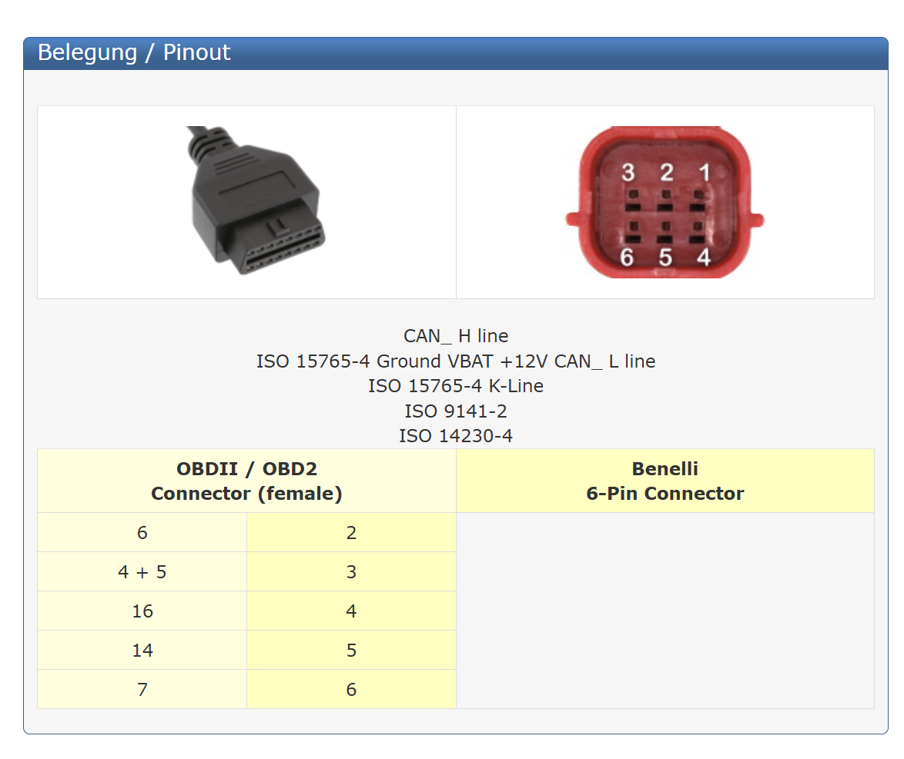

OverviewThe whole system
Three programs share one telemetry format. The node is the only part that touches the bike, and it can only listen.
CAN node
Listen-only CAN, decoder, RS-485 and BLE telemetry, SD logging of every frame, GPS time and position, battery sense, piezo taps.
ESP32 dash
The first display: a T-Display-S3 driven by one piezo switch. Replaced by the Android app, kept as a reference.
Android dash
Turns a Note 10 into a single-purpose dash. Touch pages, map split screen, TPMS caps, waypoints.
Bike captures
Raw CSV captures from the 701 on the stand, the evidence behind the signal table.
The heart of itCAN node
A LilyGO T-CAN485 under the seat. It reads the bike's CAN bus, decodes the signals the dashes need, and sends a 42-byte telemetry frame every 20 ms. It never transmits on the bike's bus.
Listen-only, twice over
The ESP32 TWAI controller runs in listen-only mode (no transmit, no ACK), and its TX signal is routed to spare pin IO25 while the transceiver's D pin is held recessive as a GPIO.
Never stale
Each signal times out: 300 ms for the 10–20 ms IDs, 1 s for 0x540. No frame of any ID for 500 ms clears the CAN OK flag.
Records everything
Every CAN frame goes to a FAT32 SD card in the background on the other core, about 1100 frames/s, roughly 120 MB per hour.
Two links at once
RS-485 to the ESP32 dash at 50 frames/s and BLE to the phone at 25 frames/s, byte for byte the same frame.
CAN nodeHardware
| Part | Detail |
|---|---|
| Board | LilyGO T-CAN485, CH9102F USB variant (LilyGO option Q331). ESP32, SN65HVD231 CAN transceiver, MAX13487E RS-485 transceiver, ME2107 boost, WS2812 LED, micro-SD slot. Windows may need the CH9102 driver. |
| Power | One automotive 5 V DC-DC buck for both boards: ≥ 2 A, input rating ≥ 40 V, fused, fed from switched ACC2. Feed each board through USB-C and leave the board's power terminal empty: LilyGO rates it 12 V max and a running bike sits above 14 V. |
| GPS | GY-GPS6MV2 (u-blox NEO-6M), 9600 baud, TX to IO35. Optional: sets the dash clock and adds NMEA lines to the SD log. |
| Battery sense | ACC2 → 100 kΩ → IO34 → 18 kΩ → GND, 100 nF across the 18 kΩ. 15 V reads 2.29 V at the pin. Calibrate with VBAT_CAL. |
| Piezo switch | Between IO32 and GND, internal pull-up. 3.3 V max: a +12 V switch output needs an optocoupler. |
| Toolchain | PlatformIO espressif32@6.9.0 (Arduino-ESP32 2.0.17), h2zero/NimBLE-Arduino@^1.4.3. |
Pin map
| GPIO | Use | Notes |
|---|---|---|
| 27 | CAN TX → SN65HVD231 D | Held recessive as a plain GPIO |
| 26 | CAN RX ← SN65HVD231 R | |
| 23 | SN65HVD231 Rs (SE) | Must stay LOW. High means sleep with the receiver off, not listen-only |
| 25 | TWAI TX, parked | The controller's TX output lands here. Leave unconnected |
| 22 / 21 | RS-485 TX / RX | MAX13487E, auto-direction |
| 17 | MAX13487E /RE | HIGH: AutoDirection controls the receiver |
| 19 | MAX13487E /SHDN | HIGH: running |
| 16 | ME2107 boost enable | 5 V for the MAX13487E |
| 4 | WS2812 status LED | Red / amber / green, flashes in SIM |
| 2 / 15 / 14 / 13 | SD MISO / MOSI / SCLK / CS | 20 MHz SPI. GPIO2 is a boot pin: remove the card if an upload won't connect |
| 35 | GPS RX (from module TX) | Input-only pin |
| 34 | Battery sense ADC | Input-only pin, divider as above |
| 32 | Piezo tap switch | Pulses to GND |
CAN nodeWiring to the bike

The 2023 701 has the Euro 5 (ISO 19689) 6-pin diagnostic connector under the seat. The CAN pins were confirmed with a meter on this bike: CAN-H 2.7 V and CAN-L 2.3 V with the key on. The older KTM 6-pin connector looks similar but is wired differently.
| Pin | Signal | Connect to |
|---|---|---|
| 1 | Not listed | Nothing |
| 2 | CAN-H | Node CAN terminal A |
| 3 | Ground | Node CAN GND, buck IN− |
| 4 | +12 V | Only if it reads 0 V with the key off, otherwise use ACC2. Never the CAN terminals |
| 5 | CAN-L | Node CAN terminal B |
| 6 | K-line | Nothing |
Node to dash
| From | To | Notes |
|---|---|---|
| Node RS-485 A / B | Dash MAX3485 A / B | Twisted pair plus GND. One-way: the node transmits, the dash listens |
| Bias at the dash | A → 3V3, B → GND | 270–390 Ω each, to hold the idle bus above 0.2 V. kΩ values don't work: with 3.9 kΩ the MAX13487E never releases the line |
| Node USB-C, dash USB-C | 5 V buck | Unplug the buck before connecting a laptop |
CAN nodeFirmware architecture
A single Arduino loop on core 1, with SD writes in their own FreeRTOS task on core 0 behind a 32 KB buffer, so a slow card never holds up CAN reception or the links.
loop() every pass
├─ simMode() LIVE, or SIM if the phone asked (selftest build: always SIM)
├─ can.read() drain the TWAI queue ──▶ handleFrame()
│ ├─ decoder.feed(id, dlc, data, now)
│ ├─ sniffer.feed() (USB tools)
│ └─ sdLog.log() (to the core-0 writer task)
├─ selftestFeed() SIM only: made-up frames through the same handleFrame()
├─ gps.poll() NMEA → time, position, speed, course, fix, sats, HDOP
├─ taps finished gesture ──▶ BLE Taps characteristic
├─ every 20 ms sendTelemetry()
│ ├─ decoder.fill(payload, now) (timeouts applied here)
│ ├─ + vbat, GPS, seq, reserved = SIM flag
│ ├─ frame = A5 5A payload crc16
│ ├─ Serial2 ──▶ RS-485
│ └─ every 2nd frame ──▶ BLE notify
├─ handleCommands() USB serial: s r c o h
└─ every 1 s updateLed() R / A / G| Module | Role |
|---|---|
| can_bus.* | TWAI driver in listen-only mode at 500 kbit/s, transceiver held silent, counters for frames, missed (queue full), overruns (hardware FIFO) and bus errors. |
| can_decode.* | Pure logic, no hardware calls: turns frames into a TelemetryPayload, tracks when each ID was last seen, applies the timeouts. Unit-testable on a PC. |
| sdlog.* | FAT32 logger. New LOGnnnnn.CSV per power-on, flushed every 2 s, drops and counts lines rather than stalling. |
| gps.* | NEO-6M parser. Local time from GPS_TIME_ZONE (POSIX TZ, with daylight saving), date, position, speed, course, height, HDOP. Raw $GPRMC lines go to the SD log. |
| ble_link.* | NimBLE GATT server: Frame, Taps, Mode and Ota characteristics. Mode reverts to LIVE on disconnect. |
| wifi_ota.* | Update mode: joins the phone hotspot with details sent over BLE, runs ArduinoOTA with a password, 30 s join and 10 min idle timeouts, stops if the engine starts. |
| taps.* | Piezo gesture counter, same timing as the ESP32 dash: 40 ms quiet before a new pulse, gesture ends 450 ms after the last pulse, up to 4 taps. |
| sniffer.* | USB serial tools for reverse engineering: ID table with rates, log all frames, or only frames that changed. |
| selftest.* | Made-up 20 s sweep of rpm, gears, coolant and throttle, fed through the real decoder. |
| main.cpp | Wiring it together: setup, loop, battery ADC (8 samples per frame), frame building, LED state, serial commands. |
Builds
| Env | What it does | Needs |
|---|---|---|
| node | The real firmware. Powers up LIVE; the phone can switch it to SIM over BLE | The bike |
| selftest | Always SIM. CAN controller not started. Battery fixed at 13.8 V | Node and dash on the bench |
Status LED
| Colour | Meaning |
|---|---|
| Red | No bike data: no CAN traffic for 500 ms, or the CAN controller isn't running |
| Amber | Running with a problem: one of the five IDs missing, no battery reading, SD not logging, or CAN errors or lost frames in the last second |
| Green | All five IDs arriving, battery reading present, SD logging, no new errors |
| Flashing | SIM data (selftest build, or SIM requested by the phone), so made-up data can't be mistaken for real |
CAN nodeDecoded CAN signals
From captures on this 2023 701, on the stand. It differs from the 2020 KTM 690 Enduro R documented in blalor/ktm-can and KTMComputer: there's no 0x12B, and the 0x540 bytes sit one position earlier. 500 kbit/s, 11-bit IDs.
| ID | Every | Bytes | Signal | Status |
|---|---|---|---|---|
| 0x120 | 20 ms | D0–D1 BE | rpm | Confirmed |
| D2 | throttle, 0–255 | Confirmed | ||
| D3 bit 3 | kill switch, 1 = run | Fits both captures | ||
| D3 bit 4 | starter button | Fits the start, not used | ||
| D4 bit 0 | throttle map | Confirmed | ||
| 0x128 | 20 ms | D2 bit 0 | 0 = throttle open | Confirmed |
| 0x129 | 20 ms | D0 high nibble | gear, 0 = neutral, 1–6 | Confirmed (N, 1–4 seen) |
| D0 bit 3 | clutch in | Confirmed | ||
| 0x12D | 10 ms | D0–D1 BE | front wheel speed, raw | Confirmed, scale not set (needs a GPS ride) |
| D2–D3 BE | rear wheel speed, raw | Unconfirmed | ||
| 0x540 | 100 ms | D3 bit 0 | side stand, 1 = up | Untestable here (switch bypassed) |
| D3 bit 4 | engine not running | Fits the start, not used | ||
| D5–D6 BE | coolant, 0.1 °C | Confirmed (23.5 → 54.6 °C) |
Seen but not decoded yet: 0x4C1 D0 is the handlebar buttons (bit 0 map, bit 1 traction control, set while held). 0x12A D1 changed from 2D to 1D when traction control was switched, possibly its on/off state. 0x174 / 0x178 / 0x17C look like IMU data (offset 16-bit values, a counter in D6, a checksum in D7). The bike clock is not on this bus, so the dash clock comes from GPS.
Key-off: the last module awake repeats its final 0x120 frame very quickly for about a second, because nothing is left to acknowledge it. The node never ACKs by design, so the repeats show in the logs and are normal.
Shared contractTelemetry wire format
include/telemetry_packet.h, identical in the node and the ESP32 dash, version 5. The Android app parses the same bytes. All multi-byte fields are little-endian. CRC-16/CCITT-FALSE (poly 0x1021, init 0xFFFF) over the payload only.
38-byte payload, 42-byte frame. Offsets are within the payload.
| Offset | Field | Type | Meaning |
|---|---|---|---|
| 0 | version | u8 | 5 |
| 1 | seq | u8 | Increments every frame, for drop counting |
| 2 | rpm | u16 | Engine rpm |
| 4 | gear | u8 | 0 = neutral, 1–6, 0xFF unknown |
| 5 | throttle | u8 | 0–255 raw |
| 6 | coolant_dC | i16 | 0.1 °C, −32768 = not received |
| 8 | wheel_front | u16 | Raw count, scaled to km/h in the dash |
| 10 | wheel_rear | u16 | Raw count |
| 12 | vbat_mV | u16 | Battery in mV, 0 = not measured |
| 14 | flags | u8 | bit0 clutch in · bit1 kill = run · bit2 stand up · bit3 map 2 · bit4 throttle open · bit7 CAN OK |
| 15 | reserved | u8 | bit0 = node is sending SIM data |
| 16 | clock_hour / min | u8, u8 | Local time from GPS, 0xFF unknown |
| 18 | gps_lat_e7 / lon_e7 | i32, i32 | Degrees × 10⁷, north and east positive |
| 26 | gps_speed_dkmh | u16 | 0.1 km/h |
| 28 | gps_course_dd | u16 | 0.1°, 0 = north |
| 30 | gps_sats / gps_fix | u8, u8 | Satellites in use; 1 = position valid |
| 32 | gps_day | u16 | Local date, days since 2000-01-01 |
| 34 | gps_alt_m | i16 | Metres above sea level |
| 36 | gps_hdop_dx10 | u8 | HDOP × 10 |
| 37 | gps_reserved | u8 | 0 |
// CRC-16/CCITT-FALSE, as in telemetry_packet.h
uint16_t crc = 0xFFFF;
for (size_t i = 0; i < len; i++) {
crc ^= (uint16_t)data[i] << 8;
for (int b = 0; b < 8; b++)
crc = (crc & 0x8000) ? (crc << 1) ^ 0x1021 : crc << 1;
}CAN node ↔ phoneBluetooth LE
The node advertises as Husky701. The phone finds it and reconnects by itself after key-off. RS-485 keeps running alongside.
| Characteristic | UUID | Props | Content |
|---|---|---|---|
| Service | 7a1e0001-4b8f-4c1e-9a70-701d45a00001 | ||
| Frame | 7a1e0002-… | notify | One whole 42-byte wire frame, every 2nd RS-485 frame (25/s). Needs MTU ≥ 45; the app asks for 247 |
| Taps | 7a1e0003-… | notify, read | [gesture seq][tap count]; seq steps on every gesture so repeats are seen |
| Mode | 7a1e0004-… | write, read | 1 = SIM, 0 = LIVE. Back to LIVE on disconnect and at power-up |
| Ota | 7a1e0005-… | write (encrypted), read, notify | Write [1][ssid len][ssid][pass len][pass] to start update mode, [0] to stop. Notifies status text: connecting…, ready 192.168.x.x, updating NN%, failed: … |
When the phone selects SIM on its Diagnostics page, the node ignores the bike and sends the selftest sweep on both links, sets reserved bit 0 and flashes its LED. The phone drops any frame flagged SIM while it is in LIVE, so made-up data can't show as real.
CAN nodeOver-the-air updates
The node under the seat is updated from VS Code over the phone's Wi-Fi hotspot. The phone gives the node the hotspot details over Bluetooth, so nothing is configured on the node itself. Wi-Fi is off except in update mode.
Phone (Diagnostics) CAN node Laptop (VS Code)
NODE UPDATE ──BLE, encrypted──▶ joins the phone hotspot
[1][ssid][password] ArduinoOTA: husky701-node.local
update: ready 192.168.x.x ◀──── status notify ◀── pio run -e node_ota -t upload
update: updating 40% ◀────── MD5 + password checked (same hotspot)
reboots on the new firmware| Step | What to do |
|---|---|
| Once | Copy can-node/secrets.example.ini to secrets.ini (gitignored) and set ota_password. Upload node by USB once, which moves to the min_spiffs.csv partitions (two 1.9 MB app slots). Hold NODE UPDATE on the phone to enter the hotspot name and password. On Windows, allow inbound TCP 32323 (the node connects back to the laptop). |
| Each update | Engine off, hotspot on, tap NODE UPDATE. When Diagnostics shows update ready 192.168.x.x, join the laptop to the hotspot and run pio run -e node_ota -t upload (add --upload-port <IP> if .local names don't resolve). |
- Refused with the engine running; Wi-Fi switches off if the engine starts.
- Ends after 10 minutes without an upload, on STOP UPDATE, or on any failure.
- The hotspot details are never saved on the node. The first write pairs the phone with the node ("just works", no PIN), so they travel encrypted.
- An interrupted or wrong upload leaves the old firmware running. USB always works as a fallback.
CAN nodeSerial tools and logs
USB monitor at 921600, one letter per command:
| Key | Does |
|---|---|
| s | Status line plus a table of every ID seen, with rate and latest bytes |
| r | Log every frame: millis ID length bytes… |
| c | Log only frames whose bytes changed (best for finding a signal) |
| o | Logging off |
| h | RS-485 line test: 3 s low, 3 s released, for 60 s. Bench only |
SD log format, one file per power-on, plus GPS NMEA lines when a module is fitted:
ms,id,len,data
30433,4C1,8,0000000000000000
1234,GPS,$GPRMC,...The captures in can-node/logs/ come from the 701 on the stand: key-on, start, warm-up, gear and clutch work, map and traction-control buttons. LOG00014.CSV and LOG00017.CSV are the main ones.
CAN nodeBring-up order
- Bench, link only. Upload
selftest, connect RS-485 to the dash running itslivebuild. LED flashes green; the dash sweeps rpm, gears and coolant over 20 s at 13.8 V with no CRC errors climbing. - Bike, key on, engine off. Do the terminator and pin checks, upload
node, connect. The LED goes from red to green. Presss. - Check the IDs. 0x120, 0x128, 0x129, 0x12D and 0x540 at the rates above;
buserrstill;missedandoverrunat 0. Ifbuserrclimbs and nothing arrives, swap H and L. - Check each signal against the table by working the controls with the monitor open.
- Calibrate battery: compare
vbat=with a multimeter and setVBAT_CAL= meter ÷ reading.
DisplayAndroid dash (Samsung Note 10)
Pages: Main, Fuel, Trip, Tyres, Map, Diagnostics (swipe to move, swipe down for a map app with a tacho strip).
- Vertical tacho with peak hold and shift lights; gear; coolant, fuel and battery bars; throttle (toggle on Diagnostics); GPS speed.
- Fuel model with learned factor, full and partial fill-ups (negative for fuel taken out), range warnings at 10 % and 5 %.
- Map: dive-computer heading tape, degrees and decimal minutes, trail, waypoints with names, navigate-to, what3words on demand.
- BLE TPMS caps (FOBO Bike 2 and others), split screen with Google Maps or Gaia, appliance (kiosk) mode.
Display · discontinuedESP32 dash (LilyGO T-Display-S3)
esp32-dash/ as a reference and a fallback, and the CAN node still drives it over RS-485 alongside Bluetooth.A 320 × 170 landscape dash on an ESP32-S3, receiving the same 42-byte frames from the CAN node over a receive-only RS-485 link and driven by one piezo switch.
Hardware
| Part | Detail |
|---|---|
| Board | LilyGO T-Display-S3 (ESP32-S3, 1.9″ 320 × 170 ST7789 LCD). LCD power on GPIO15 (must be HIGH), backlight PWM on GPIO38 |
| Link | MAX3485 module, receive only: RO → GPIO18 (on the module used, the pin labelled TXD), DE and /RE → GND, DI not connected, 3V3 and GND. 115200 baud. No valid frame for 500 ms shows NO LINK |
| Bus bias | 270–390 Ω from A to 3V3 and from B to GND at the dash, needed by the node's MAX13487E. Idle A–B above 0.2 V |
| Input | One momentary piezo switch on GPIO14, pulsing to GND. Functions are picked by the number of quick taps; a gesture ends 450 ms after the last tap |
| Toolchain | PlatformIO espressif32@6.9.0 (Arduino-ESP32 2.0.17), because TFT_eSPI doesn't work on core 3.x. The TFT_eSPI setup is passed as build flags, so no library files are edited |
Code layout
| Module | Role |
|---|---|
| main.cpp | Setup and loop: frame source (simulator or link), tap gestures, page switching, saving to flash |
| link.* | Receives frames on UART1 from RS-485: sync search, length, CRC-16 check, drop counter from seq, NO LINK timeout. Includes a linktest wiring check |
| simulator.* | Builds real frames for a scripted ~70 s ride (key on, cranking, warm-up, full-throttle run through 1–6, cruise in map 2, downshifts, hot idle, engine off) and feeds them through the real parser. Corrupts 1 frame in 250 and drops 1 in 400 on purpose |
| ui.* | All screen drawing with TFT_eSPI and custom digit fonts in include/*Digits.h: tacho bar with peak hold and shift light, gear, coolant, battery, and every page |
| fuel.* | Fuel estimate with no fuel sensor: flow ∝ rpm × (idle load + throttle), none on overrun, factor learned at each full fill-up |
| trip.* | Today (from the GPS date) and Since refuel: distance, fuel, L/100, riding time, average and maximum speed |
| battery.* | Resting voltage before each start and lowest voltage while cranking, with a trend over the last starts |
| nav.* | GPS position, breadcrumb waypoints, snail trail and track-back, saved to flash |
| tpms.* | Passive BLE scan for valve-cap tyre sensors (FOBO Bike 2, TPMSII, ITPMS and others) |
| clock.* | Time of day from the node's GPS; shows --:-- until there's a fix |
Builds and pages
| Env | Data source |
|---|---|
| sim | Built-in simulator, just the T-Display-S3 needed (default) |
| live | Frames from the CAN node over RS-485 |
Pages: Main (tacho, gear, coolant, battery, speed), Fuel, Trip, Tyres, GPS, Night dimming, Clock and Diagnostics. Nothing is saved to flash while the source is SIM, so test rides can't touch real trip, fuel or waypoint records. The Android app carries over all of these pages.
Get startedBuild it
# CAN node
cd can-node
pio run -e selftest -t upload # bench, no bike
pio run -e node -t upload # real firmware
pio run -e node_ota -t upload # real firmware over Wi-Fi (see OTA updates)
pio device monitor -b 921600
# ESP32 dash
cd esp32-dash
pio run -e sim -t upload # scripted ride
pio run -e live -t upload # frames from the node
# Android dash (JDK 17)
cd android
./gradlew testDebugUnitTest assembleDebugOptional what3words: add w3w.apiKey=your-key to android/local.properties, which is never committed.